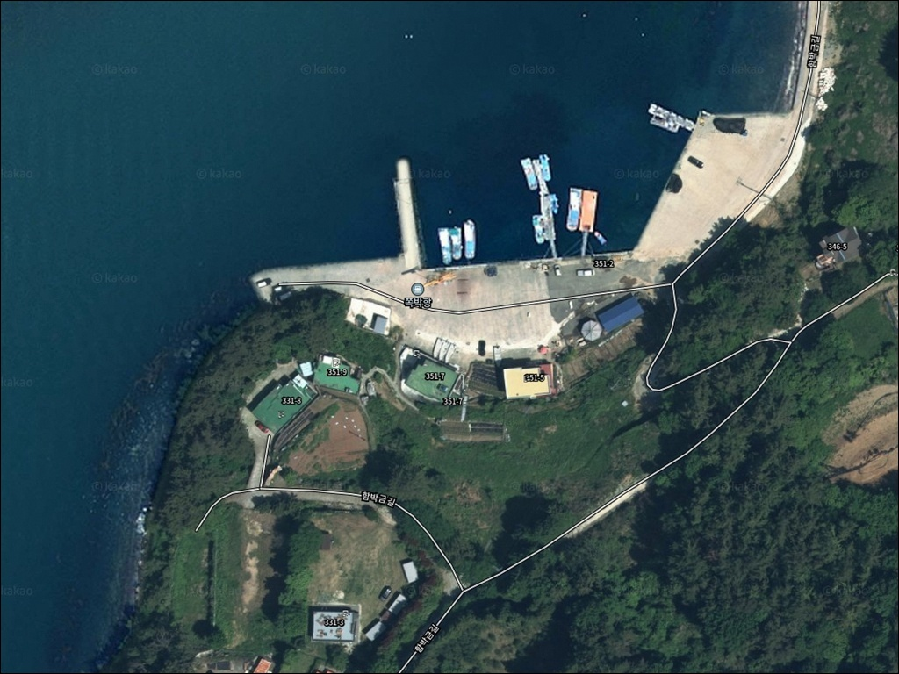
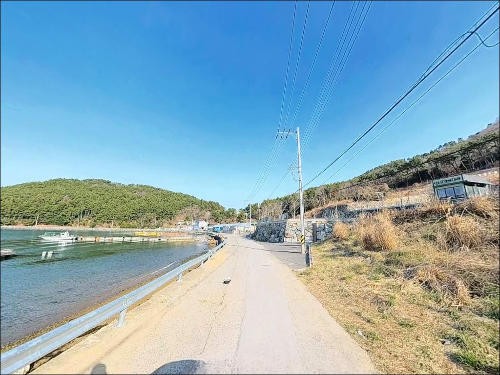
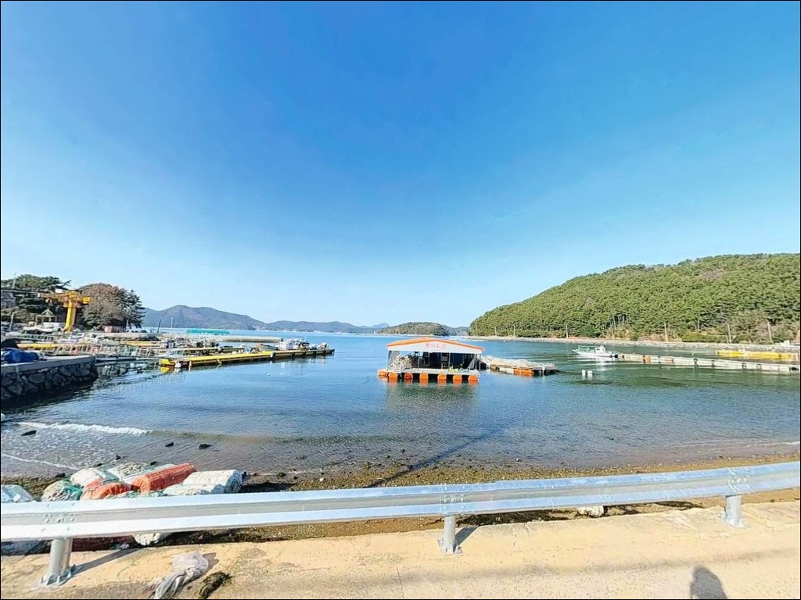
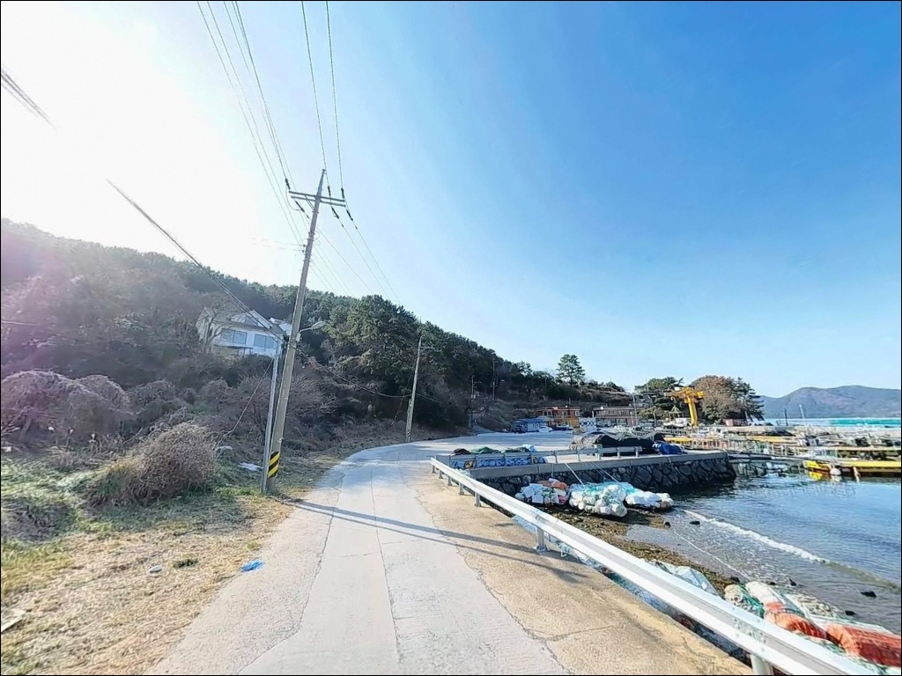
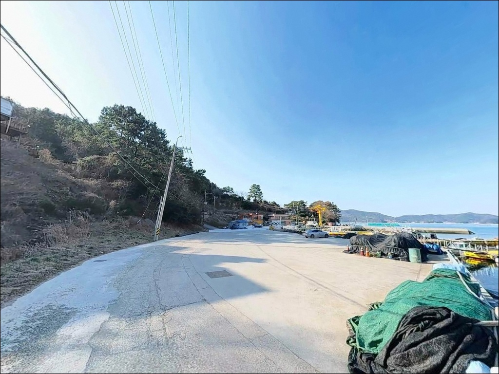
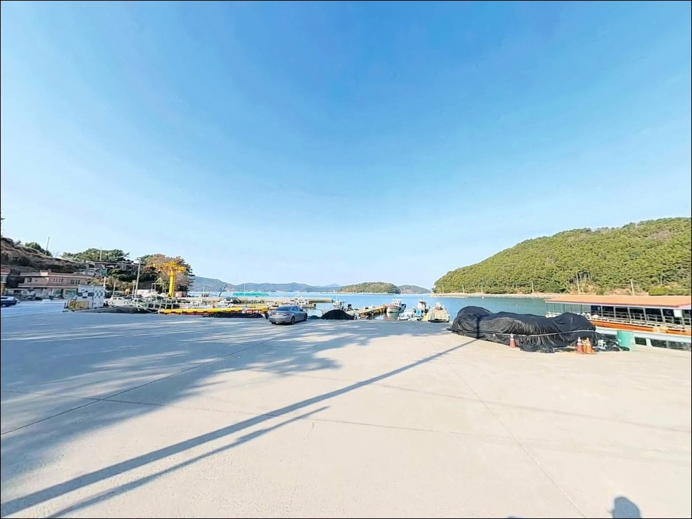
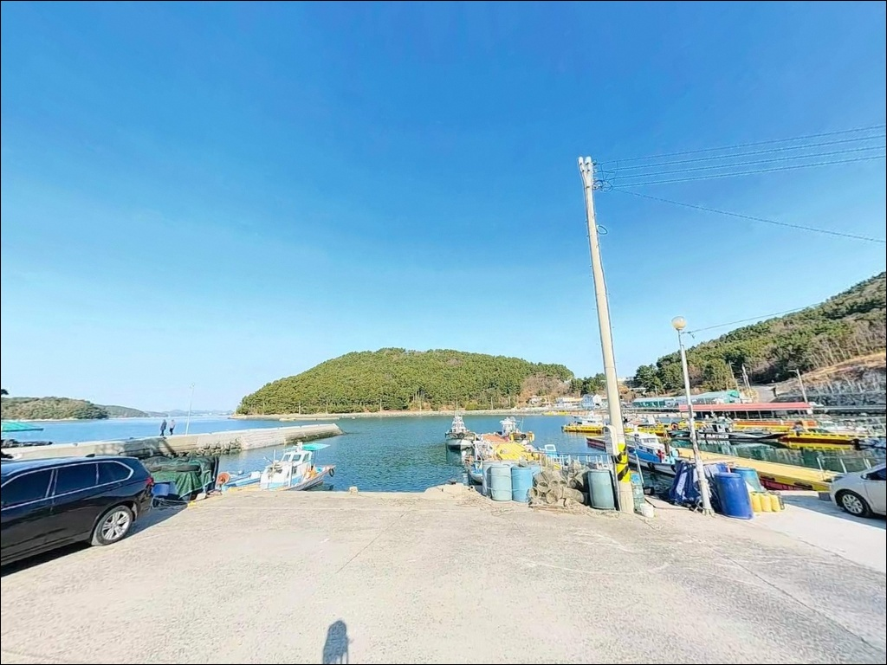
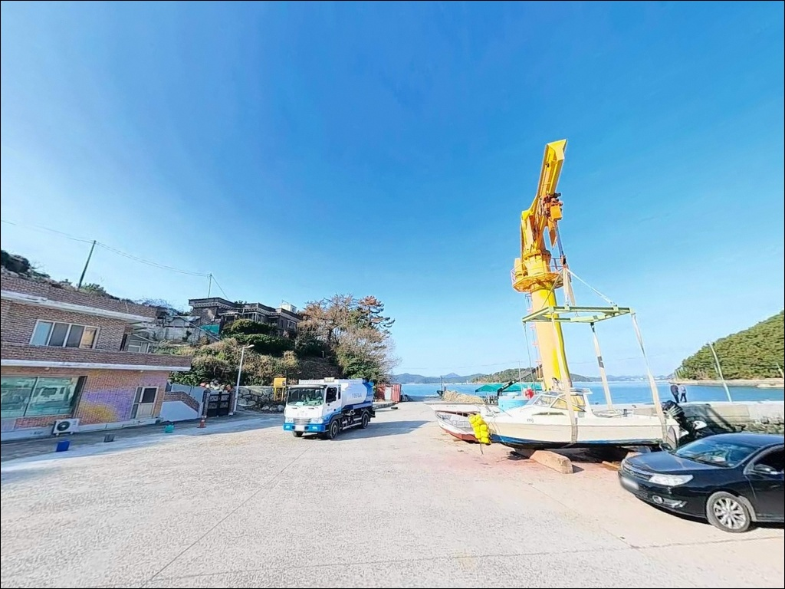
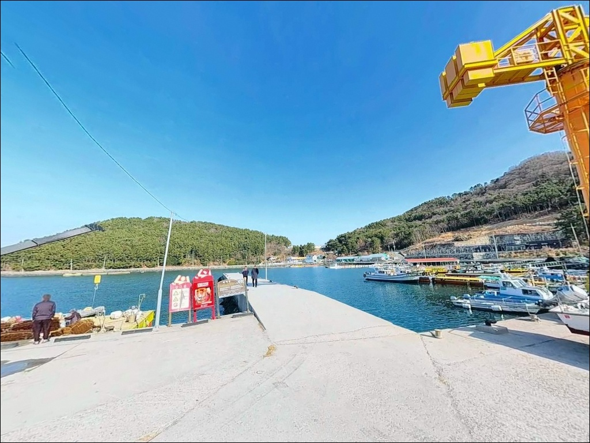

석축 옆 차 붙이고 낚시할 때, 거제 쪽박항 자리 확보와 내만 공략


포인트 안내
쪽박항(함박금방파제)
경남 거제시 동부면 가배리 873-11
가배만 안쪽 내만 구조라는 이유로
준비 없이 찾아오는 방문자가 많습니다.
소형 어항 특성상 낚시 공간이 협소하고
어선 조업 시간대와 겹치면 자리를 내줘야 하는 상황이 생겨,
늦은 도착은 낚시 자체를 어렵게 만듭니다.
이 글은 쪽박항의 지형 조건과
낚시 방식별 공략 기준, 진입 환경,
차박 여건을 중심으로 정리합니다.
조황 단정이나 특정 어종 보장은
이 글의 범위에 포함되지 않습니다.

1. 포인트 위치 및 진입 동선
쪽박항은 거제남서로에서 가배리 방면으로 진입한 뒤
해안 도로를 따라 쪽박금마을까지 이어지는 경로로 접근합니다.
전 구간이 포장도로로 연결되어 있고
완만한 해안 마을길 구조라
일반 승용차·소형 SUV 기준 진입 난이도는 낮은 편입니다.
마을 내부로 들어서면 도로 폭이 다소 좁아지는 구간이 있어
대형 캠핑카나 카라반이라면
마을 진입 전 회차 공간을 미리 확인하는 것이 좋습니다.
항 앞 소형 공터와 선착장 주변 평지가 주차 가능 공간이며,
석축 구간에는 차량을 바로 옆에 붙여 세우는 방식이 일반적입니다.
쪽박항과 함박금마을은 같은 진입로를 공유하므로
어선 조업 차량 통행로를 막지 않는 자리 선정이 기본입니다.
방파제 끝단과 석축 경계가 맞닿는 지점은
이 포인트에서 수심 변화가 가장 뚜렷한 핵심 자리입니다.
처음 방문이라면 이 지점을 기준으로
좌우 탐색 범위를 결정하는 것이 효율적입니다.

2. 차박 환경과 야간 체류 여건
쪽박항의 차박 강점은 석축 바로 옆에
차량을 붙여 세울 수 있다는 점입니다.
낚시 발판과 주차 위치가 직결되어 있어
3~4명 규모 소규모 팀이
차량을 베이스캠프로 활용하는 차낚 방식에 최적화된 구조입니다.
항 입구와 주차장 일대에 가로등이 설치되어 있어
야간에도 시야 확보는 가능한 편입니다.
가배리 마을과 인접한 구조라
완전 외딴 포인트 느낌보다는
조용한 어촌 마을을 배경에 둔 소형 항구 분위기에 가깝습니다.
심야 이후 소음은 최소화하는 것이 이곳의 기본 매너입니다.
인근에 오토캠핑장이 조성되어 있어
정식 캠핑 환경을 원하는 경우 대안이 됩니다.
가배리 일대 민박·펜션도 분포하고 있어
차박 대신 숙소를 선택하는 방식과도 병행이 가능합니다.


3. 주변 편의시설 및 인프라 현황
항 입구와 주차장 인근에 공용 화장실이 설치되어 있습니다.
소형 어촌정주어항 가운데
비교적 편의 여건이 갖춰진 조건입니다.
가배리 일대 소규모 식당이 주변에 분포하지만
대형 편의점·마트 수준의 보급은
차량으로 반경 3km권 동부면 생활권으로 이동해야 합니다.
편의점, 주유소, 식당가가 동부면 소재지에 집중되어 있어
보급은 동부면 방향 이동으로 해결하는 것이 현실적입니다.
거제 동부면 보건지소가 반경 내에 위치하며,
응급 상황 시 거제 시내권 의료시설까지
차량 이동이 가능한 거리입니다.
출조 전 연료와 식수, 비상약품을
미리 갖추고 진입하는 것이 기본입니다.

4. 방문 전 준비사항 및 체크 포인트
쪽박항은 어촌정주어항으로
어선 접안과 어업 활동이 우선인 공간입니다.
소형 어항에서는 어선 조업 동선과 낚시 자리가 겹치지 않도록
진입 즉시 위치를 판단하는 것이 이 포인트의 기본 매너입니다.
조업 차량 통행로는 항상 확보해 두어야 합니다.
내만 구조라 외해보다 날씨 영향이 적은 편이지만,
거제 남부 해역은 기상 변화 시 빠르게 악화되는 경향이 있습니다.
출조 전 기상청 및 해양기상 예보 확인이
포인트 낭비를 막는 기본 조건입니다.
야간 낚시 시 헤드랜턴과 구명조끼는 계절과 무관하게 필수입니다.
소형 어항 특성상 낚시 공간이 제한적이므로
출조 전 "거제 동부면 조황" 또는 "가배항 조황"을 검색해
현장 상황을 미리 파악하는 편이 좋습니다.
가배만 양식장 부표 주변에서 이루어지는 댓마낚시는
이 일대 특화 방식으로,
이 방식을 계획 중이라면 현지 확인이 먼저입니다.

5. 지형 기반 낚시 여건 분석
쪽박항이 잔잔한 이유는 지형 구조에 있습니다.
전방에 한산도와 추봉도가 자리해
외해 파도와 강한 조류를 차단하는
자연방파제 역할을 수행합니다.
가배만 전체가 호수 같은 내만 구조라
조류는 완만하게 흐르는 정체형 해역으로 유지됩니다.
항 구조는 석축 선착장과 소형 방파제가 결합된 형태이며
낚시 공간은 크게 세 구간으로 나뉩니다.
석축 구간, 선착장 발판, 항 주변 해안도로 구간이 해당합니다.
바닥은 모래와 펄이 혼합된 구조로
밑걸림이 적어 채비 운용이 수월한 편입니다.
수심은 내항 기준 3~5m 수준이며
방파제 끝단에서 외항 방향으로 갈수록 깊어지는 패턴입니다.
가배만 입구 방향으로 캐스팅 거리를 늘릴수록
수심이 더해지는 구조라
원거리 탐색 구간에서 바닥층 어종을 기대해 볼 수 있습니다.
출조 전 최신 조황은 반드시 검색해 보시기 바랍니다.


6. 가배만 내만 구조에서 낚시 조과가 달라지는 스타일 선택 기준
원투낚시는 이 포인트 지형과 가장 잘 맞는 방식입니다.
모래·펄 혼합 저질과 완만한 수심이
봉돌 채비가 안정적으로 자리 잡을 수 있는 조건을 만들어줍니다.
가배만 중앙 방향으로 캐스팅 거리를 늘릴수록
도다리·노래미·붕장어 등 바닥층 어종을 노리기에 유리한 구간이 확보됩니다.
찌낚시와 릴찌낚시는 방파제 끝단과
석축 구조물 주변에서 운용하기 좋은 방식입니다.
조류가 약한 내만이라 저부력찌 전유동 채비 운용이 가능하며,
가을·겨울철에는 학꽁치·전갱이 등
회유성 어종의 유입이 잦은 시기에 해당합니다.
에깅도 이 해역에서 기대해 볼 수 있는 방식입니다.
방파제 외항 석축 경계면과 끝단 주변은
조류 소통이 상대적으로 활성화되는 구간으로,
가을 이후 갑오징어·무늬오징어 에깅 시즌과 연결됩니다.
볼락 라이트게임은 야간 가로등 영향 구간을
소형 지그헤드 채비로 천천히 탐색하는 방식이 어울립니다.

7. 대안 포인트와 플랜 B 동선
쪽박항 공간이 여의치 않을 때
가장 빠른 대안은
가배마을 방파제입니다.
직선 기준 약 272m 거리로
같은 가배만 안쪽에서 유사한 해역 조건을 공유하며,
방파제 발판이 안정적인 구조입니다.
함박금 선착장은 약 1km 거리에 위치하며
쪽박항과 같은 가배만 해안선을 따라 이어지는 포인트입니다.
가배만 양식장 댓마낚시 거점으로도 활용되는 곳으로,
쪽박항이 붐빌 경우
첫 번째 이동 대안으로 가장 적합합니다.
수심이 더 깊은 환경을 원한다면
약 8km 거리의 수산방파제(동부면 학동리)로 이동하는 방법이 있습니다.
초입 수심 5~6m, 끝단 8m 수준으로
에깅·감성돔·농어 등 더 다양한 어종 공략이 가능하며,
차량 접근 여건도 안정적인 편입니다.

소형 어항이라도
구조를 알면 쪽박항이 달라 보입니다
원투낚시부터 에깅, 볼락 라이트게임까지
복수 방식으로 대응할 수 있고
차량을 낚시 발판 바로 옆에 붙이는 방식으로
차낚 편의가 높은 포인트입니다.
내만 구조 덕에 파도와 너울 걱정이 적어
가족 단위 방문이나 생활낚시 입문자에게도
진입 장벽이 낮은 환경을 갖춘 방파제입니다.
반면 공간이 협소하고
어선 조업 동선을 항상 의식해야 하는 포인트라는 점,
보급 인프라를 사전에 갖추고 진입해야 한다는 점을
감안하면 준비 없는 방문은 기대를 밑돌 수 있습니다.
도착 시각, 자리 확보, 어선 동선 배려를
미리 염두에 두고 가면
가배만 내만 특유의 조용한 출조를 즐길 수 있습니다.
잔잔한 만 안쪽에서 채비를 펼치고
차 옆에 앉아 조류가 바뀌기를 기다리는 차낚의 맛은,
거제 남부 해안에서도 흔하지 않은 경험입니다.